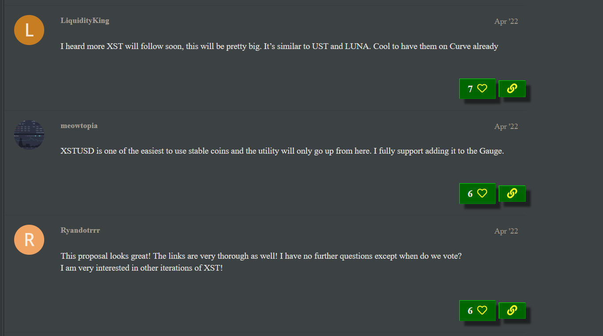

How decisive are whales votes?
Contents
How decisive are whales votes?#
Aims of this report#
This article aims to analyze the top 60 DAOs, ranked by treasury size to determine the impact of large token holders (whales) on their governance.
Our main contribution is the whale decisiveness metric, representing how governance decisions in a given DAO are affected by whale votes.
In this report we produce:
The whale decisiveness metric on each of the top 60 DAOs.
On three proposals, a case study on how large was the influence of whales in their outcome.
For the purpose of this report, whales are defined as the top 5% voters in terms of voting power for a given proposal (voters with voting power at or above the 95th percentile of voting power for that proposal).
Whale decisiveness is defined for each DAO as the percentage of proposals which outcome would have been changed if whales hadn’t voted.
This report relies on on-chain data as well as Snapshot data about proposals and voters.
For more detailed data and case studies, check out our extensive report here.
This is a work in progress and will get updated with newer learnings, so stay tuned!
Takeaways#
Out of 60 DAOs:
5 of them (8%) have a whale decisiveness metric > 20%.
16 of them (27%) have whale decisiveness > 10%.
Meaning that in 16 DAOs, whales votes have produced a different outcome than minority votes in 10 proposals of the last 100.
Looking at some of these proposals (in Decentraland, Curve Finance and Radicle) in detail, we start having a hint at the reasons why whale votes were diverging from minority votes. Namely:
Massive whale voting power dominance coupled with meager participation from minority holders.
Divergence of interests.
Calculations#
Load data#
Two spreadsheets are generated using python pluto_report.py (see the README).
They contains each voter’s choice and voting power for up to the last one hundred proposals in each DAO. The “filtered” spreadsheet filters out whales.
Compute score differences#
For each choice of each proposal, get:
Actual score.
Hypothetical score that would have been produced if whales didn’t vote.
Then compute if the outcome is different, meaning if the outcome would have been changed if whales didn’t vote.
Then compute, for each DAO, the changed outcome propotion among the last 100 proposals.
Synthesis#
For each DAO, show the %age of proposals which outcome would have been changed if whales didn’t vote.
| # of whales | all voters | whale decisiveness | |
|---|---|---|---|
| DAO | |||
| Uniswap | 801 | 23136 | 16% |
| ENS | 321 | 9742 | 4% |
| Lido | 143 | 4664 | 6% |
| Frax | 1 | 339 | 4% |
| Curve Finance | 21 | 285 | 21% |
| Decentraland | 62 | 1768 | 23% |
| Hop | 30 | 1483 | 4% |
| Radicle | 18 | 395 | 18% |
| Gitcoin | 189 | 6258 | 12% |
| Euler | 29 | 780 | 13% |
| Gearbox | 32 | 881 | 0% |
| SuperRare DAO | 17 | 563 | 0% |
| Merit Circle | 16 | 981 | 0% |
| JPEG’d | 29 | 837 | 8% |
| Aavegotchi | 50 | 5702 | 7% |
| Rook | 11 | 261 | 6% |
| ApeCoin DAO | 192 | 6812 | 12% |
| Klima DAO | 140 | 6503 | 0% |
| Radiant Capital | 244 | 4783 | 0% |
| Instadapp | 3 | 75 | 10% |
| Vesta | 689 | 15382 | 12% |
| Hector Network | 139 | 6554 | 6% |
| Spool DAO | 3 | 54 | 0% |
| Qi Dao | Mai.Finance | 51 | 4112 | 20% |
| Angle Protocol | 16 | 473 | 10% |
| Redacted | 11 | 360 | 22% |
| ssv.network | 7 | 250 | 0% |
| Metronome DAO | 1 | 9 | 0% |
| BadgerDAO | 251 | 11169 | 5% |
| Ampleforth | 6 | 119 | 6% |
| Pangolin Songbird | 5 | 105 | 0% |
| Alchemix | 49 | 2210 | 4% |
| Magic Internet Money | 56 | 1676 | 0% |
| New Order | 22 | 572 | 3% |
| Rally | 1313 | 1531 | 0% |
| 1inch Network | 26 | 604 | 0% |
| Synapse Protocol | 14 | 456 | 0% |
| Nexus Mutual Community Fund | 3 | 198 | 17% |
| Silo | 8 | 316 | 3% |
| Popcorn | 8 | 249 | 15% |
| Botto | 7 | 292 | 10% |
| Cryptex | 4 | 24 | 6% |
| Decentral Games | 57 | 2084 | 17% |
| Unlock Protocol | 5 | 97 | 23% |
Case studies#
Decentraland#
Proportion of Outcomes Changed:#
23% of Decentraland's proposal outcomes change after filtering out whale voting power.
Proposal Analysis:#
For example, this proposal to set a duration period for the tenure of Decentraland DAO committee members had decisive whale votes: had whales not voted, the outcome would have been inversed.
| Yes | No | Invalid question/options | |
|---|---|---|---|
| Scores | 168338.2 | 1394610.4 | 0.0 |
| Whale-only scores | 166209.6 | 1392896.0 | 0.0 |
| Non-whale scores | 2128.6 | 1714.4 | 0.0 |
99.9% of voting power was attributed to whales, with 94.85% of proposal voting power allocated to voting for the proposal not to pass.
We also observe that non-whale voting power is very low in this proposal.
Curve Finance#
Proportion of Outcomes Changed:#
21% of Curve Finance's proposal outcomes change after filtering out whale voting power.
Proposal Analysis:#
One proposal which would have passed if not for whale intervention was this proposal to add the XSTUSD-3CRV pair to Curve’s gauge controller to accrue CRV for liquidity providers of XSTUSD-3CRV. XSTUSD is a stablecoin deployed on Polkadot and Kusama that is backed by a synthetic token called XOR (Sora’s native token).
The governance discussion about the vote shows reckless promotion of XST.

Quite a few people had their concerns about XST early on.
We looked at the first 16 accounts which showed really strong support for this proposal, and almost every single one was created within 2 days of the proposal’s forum post. One can reasonably conclude that they were created for the sole purpose of “shilling”.
| Yes | No | |
|---|---|---|
| Scores | 45352.6 | 529201.3 |
| Whale-only scores | 23463.0 | 511330.5 |
| Non-whale scores | 21889.6 | 17870.8 |
Just over 4% of voting power for this proposal was allocated by whales to vote “Yes” (which is just over half the total voting power allocated to the “Yes” choice for this proposal), whereas 89% of whale voting power was allocated to voting “No” (97% of total voting power for this choice).
Clearly, large token holders had an incentive not to let this proposal pass. It seems some such large CRV whales voted sensibly.
Just over 10% of whale voting power for this proposal was allocated to voting “Aye” on this proposal (27% of voting power allocated to the “Aye” choice came from whales). Whereas 45% of voting power from whales was allocated to the “Nay” choice (73% of whale voting power allocated to “Nay”).
Radicle#
Proportion of Outcomes Changed:#
18% of Radicle's proposal outcomes change after filtering out whale voting power.
Proposal Analysis:#
For Radicle, we look at this proposal to distribute RAD remaining following a Liquidity Bootsrapping (LBP) round conducted in February ‘21. This leftover RAD was proposed to be redistributed to participants of the LBP, i.e. people who bought RAD in this period from the Balancer LBP for RAD tokens.
| Aye | Nay | |
|---|---|---|
| Scores | 78136.3 | 123126.4 |
| Whale-only scores | 20708.3 | 90218.7 |
| Non-whale scores | 57428.0 | 32907.8 |
Just over 10% of voting power for this proposal was allocated by whales to vote “Aye” on this proposal (27% of voting power allocated to the “Aye” choice came from whales). Whereas 45% of voting power that came from whales was allocated to the “Nay” choice (73% of whale voting power allocated to “Nay”).